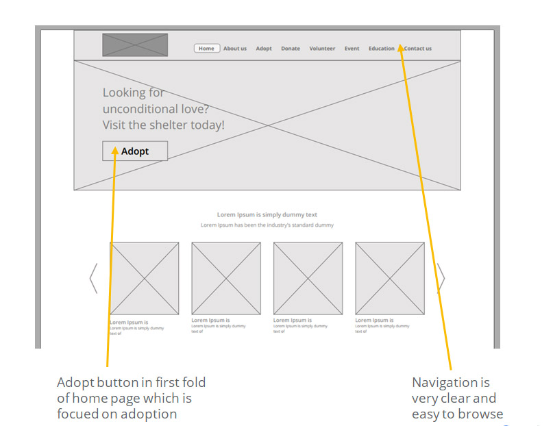
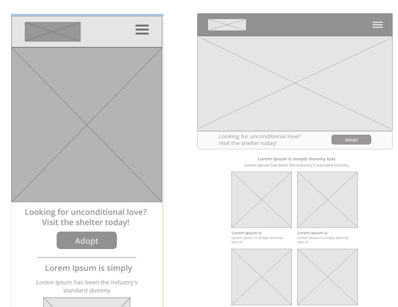
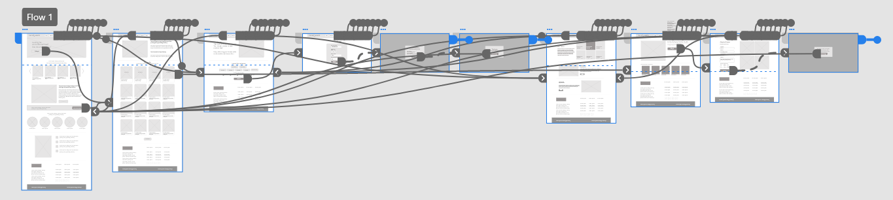

The Product
Tiny Hearts is place where stray or abandoned animals, such as dogs & cats, brought to be cared for and rehabilitated. These animals are often rescued from the streets or surrendered by their previous owners. Animal shelters provide temporary housing, food, and medical care to these animals while they await adoption.
Duration
Dec 2022 to Feb 2023
The Problem
Avaliable website dont proper information about pets and even no proper navigations, confusing adoption process, cluttered and unnecessory information and not easy to use.
The Goal
Design a website which provides clear proper brief infromation about pet and adoption process, which is easy to use
My role
UX Designer leading the Tiny hearts (animal shelter) website.
Responsibilities
Conducting interviews, paper and digital wire-framing, low and high-fidelity prototyping, conducting usability studies, accounting for accessibility, and iterating on designs.
Brainstorming
We sought to develop a user-friendly platform that would match prospective pet owners with the ideal furry friend during our brainstorming session for the Pet Adoption from Animal Shelter website. In order to aid customers in making knowledgeable choices, we chose to give comprehensive pet information for each animal, including photographs, breed, age, gender, and temperament. To ensure a seamless transition for the pets and their new owners, we also wanted to offer pet training upon request.
We incorporated a step-by-step adoption procedure that leads customers through the required paperwork, fees, and medical examinations in order to make the adoption process simple. In order to make sure that the pet and the owner are both content and healthy following the adoption, we also wanted to provide support.
In order to make the adoption process convenient for both users and the shelter staff, we also wanted to add a scheduling feature that lets users select a date and time.
Our overall goal was to develop a supportive and user-friendly platform that promotes pet adoption and helps to better the lives of animals in need. Our platform offers comprehensive pet information, training, a simple adoption process, and post-adoption assistance to make sure that the pets and their new owners are content and well-cared-for.
User Interview
We spoke with participants ranging in age from 18 to 55 during our user interview for the Pet Adoption from Animal Shelter website to learn more about their adoption preferences and experiences. We sought to comprehend the difficulties they encountered in the adoption procedure and the features they would want to see on a website for pet adoption. As a result of the input we got, we were able to create a user-friendly platform that offers thorough pet information, training, a simple adoption procedure, and post-adoption support, assuring the happiness and well-being of both the pets and their new owners.
Research questionnaire
What inspired you to take home a pet from a shelter?
What stage of the adoption process was the most difficult?
How significant is comprehensive pet information to you when thinking about adoption?
Would you be open to getting pet instruction on demand?
What kind of post-adoption assistance should you anticipate from a pet adoption website?
How would you like to arrange an appointment for adoption?
Competitive analysis
Petfinder and Adopt-a-Pet were the two competitors we looked at in our competitive study for the website for pet adoption from animal shelters.
One of Petfinder's advantages is its comprehensive database of available pets, which includes details on breed, age, and location. Also, the website provides a number of services like adoption advice, pet care recommendations, and a search engine for pet-friendly housing. Nonetheless, some visitors have bemoaned the website's archaic navigation and look.
The features of Adopt-a-Pet include its user-friendly interface and thorough pet profiles, which include images and videos. The portal also provides a smartphone app for easy on-the-go adoption search. The platform, according to some users, is lacking detailed information about pet temperament and behaviour.
In contrast, our website for pet adoption from animal shelters seeks to offer a user-friendly platform with comprehensive pet information, training, a simple adoption process, and post-adoption support, ensuring that both the pets and their new owners are content and well-cared for. In order to distinguish ourselves from our rivals, we provide a scheduling facility for adoption appointments.
User Persona
User journey map
Paper Wireframe
Paper wireframe of 5 versions of the home page
I then sketched out each screen in my app while considering the user's pain points with regard to navigation, browsing, and a particular information flow
Digital Wireframe
A crucial component of the strategy was giving useful features like the placement of the Adopt button and the visual components on the home page priority.
Digital wireframe screen size variation(s)
Low-fidelity prototype
At this point, team members gave me input on my design about issues like page structure and reducing the number of submenus. I made sure to pay attention to their comments and adopted a lot of their suggestions where they addressed user pain points.
Usability study: parameters

{kind=link}
{kind=link}
{kind=link}
{kind=link}